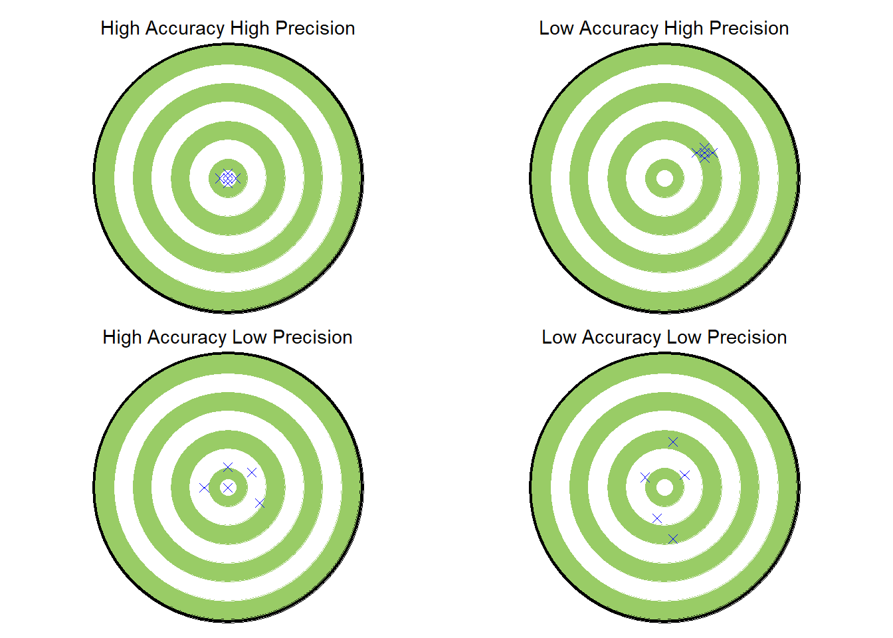

Code
library(ggplot2)Warning: package 'ggplot2' was built under R version 4.1.2Code
target <-
ggplot(data.frame(c(1:10),c(1:10)))+
geom_point(aes(x = 5, y = 5), size = 71.5, color = "black")+
geom_point(aes(x = 5, y = 5), size = 70, color = "orange")+
geom_point(aes(x = 5, y = 5), size = 60, color = "white")+
geom_point(aes(x = 5, y = 5), size = 50, color = "orange")+
geom_point(aes(x = 5, y = 5), size = 40, color = "white")+
geom_point(aes(x = 5, y = 5), size = 30, color = "orange")+
geom_point(aes(x = 5, y = 5), size = 20, color = "white")+
geom_point(aes(x = 5, y = 5), size = 10, color = "orange")+
geom_point(aes(x = 5, y = 5), size = 4, color = "white")+
ylim(0,10)+
xlim(0,10)+
theme_void()
hahp <- target +
labs(subtitle = "High Accuracy High Precision")+
theme(plot.subtitle = element_text(hjust = 0.5))+
geom_point(aes(x = 5, y = 5), shape = 4, size =2, color = "blue")+
geom_point(aes(x = 5, y = 5.2), shape = 4, size =2, color = "blue")+
geom_point(aes(x = 5, y = 4.8), shape = 4, size =2, color = "blue")+
geom_point(aes(x = 4.8, y = 5), shape = 4, size =2, color = "blue")+
geom_point(aes(x = 5.2, y = 5), shape = 4, size =2, color = "blue")
lahp <- target +
labs(subtitle = "Low Accuracy High Precision")+
theme(plot.subtitle = element_text(hjust = 0.5))+
geom_point(aes(x = 6, y = 6), shape = 4, size =2, color = "blue")+
geom_point(aes(x = 6, y = 6.2), shape = 4, size =2, color = "blue")+
geom_point(aes(x = 6, y = 5.8), shape = 4, size =2, color = "blue")+
geom_point(aes(x = 5.8, y = 6), shape = 4, size =2, color = "blue")+
geom_point(aes(x = 6.2, y = 6), shape = 4, size =2, color = "blue")
halp <- target +
labs(subtitle = "High Accuracy Low Precision")+
theme(plot.subtitle = element_text(hjust = 0.5))+
geom_point(aes(x = 5, y = 5), shape = 4, size =2, color = "blue")+
geom_point(aes(x = 5, y = 5.8), shape = 4, size =2, color = "blue")+
geom_point(aes(x = 5.8, y = 4.4), shape = 4, size =2, color = "blue")+
geom_point(aes(x = 4.4, y = 5), shape = 4, size =2, color = "blue")+
geom_point(aes(x = 5.6, y = 5.6), shape = 4, size =2, color = "blue")
lalp <- target +
labs(subtitle = "Low Accuracy Low Precision")+
theme(plot.subtitle = element_text(hjust = 0.5))+
geom_point(aes(x = 5.5, y = 5.5), shape = 4, size =2, color = "blue")+
geom_point(aes(x = 4.5, y = 5.4), shape = 4, size =2, color = "blue")+
geom_point(aes(x = 5.2, y = 6.8), shape = 4, size =2, color = "blue")+
geom_point(aes(x = 4.8, y = 3.8), shape = 4, size =2, color = "blue")+
geom_point(aes(x = 5.2, y = 3), shape = 4, size =2, color = "blue")
library(patchwork)
(hahp | lahp) /
(halp | lalp)